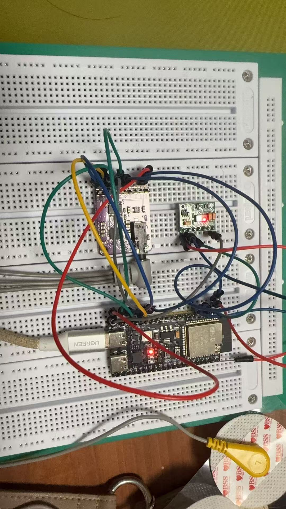
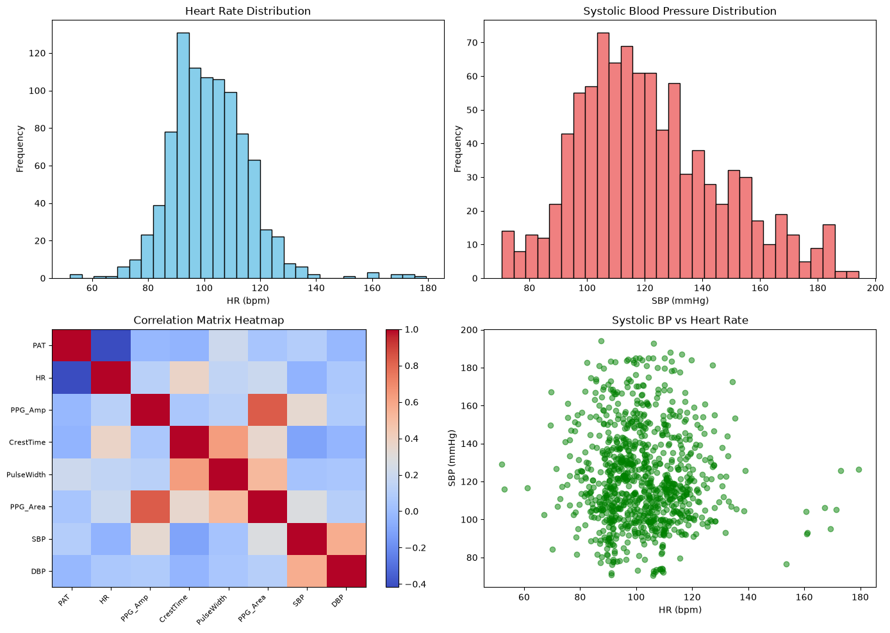

About Me
AI/ML engineer with an ECE background who builds end-to-end — from sensor hardware, to data pipelines, to trained models.
Education: M.S. in Geographic Information Science and Technology, University of Southern California (Jan. 2026–present).
Projects & Skills
Clockles — Wearable Cuffless-BP Prototype

- Built a wearable ECG + PPG sensor front-end on an ESP32-S3 (MAX30003 over SPI, MAX30102 over I2C); root-caused a frozen ECG FIFO to a missing external 32.768 kHz clock and generated it from the microcontroller to recover the waveform.
- Reused a single feature-extraction codebase to serve both a public dataset and live hardware, extracting six physiological features into a Random Forest model (5-fold CV; systolic MAE improved from 20.2 to 16.1 mmHg).
Data Analyst Agent

- Built and shipped a conversational data-analysis agent (Python, Claude API, Streamlit): natural-language questions trigger model-generated pandas code through a self-correcting, multi-tool execution loop, returning answers with charts.
Skills
- Python, SQL
- PyTorch, Machine Learning (Random Forest)
- LLM prompt engineering
- ESP32-S3 / embedded systems
- Streamlit
- Git / GitHub
Contact
Email: chiyux@usc.edu
GitHub: github.com/xuchiyu1